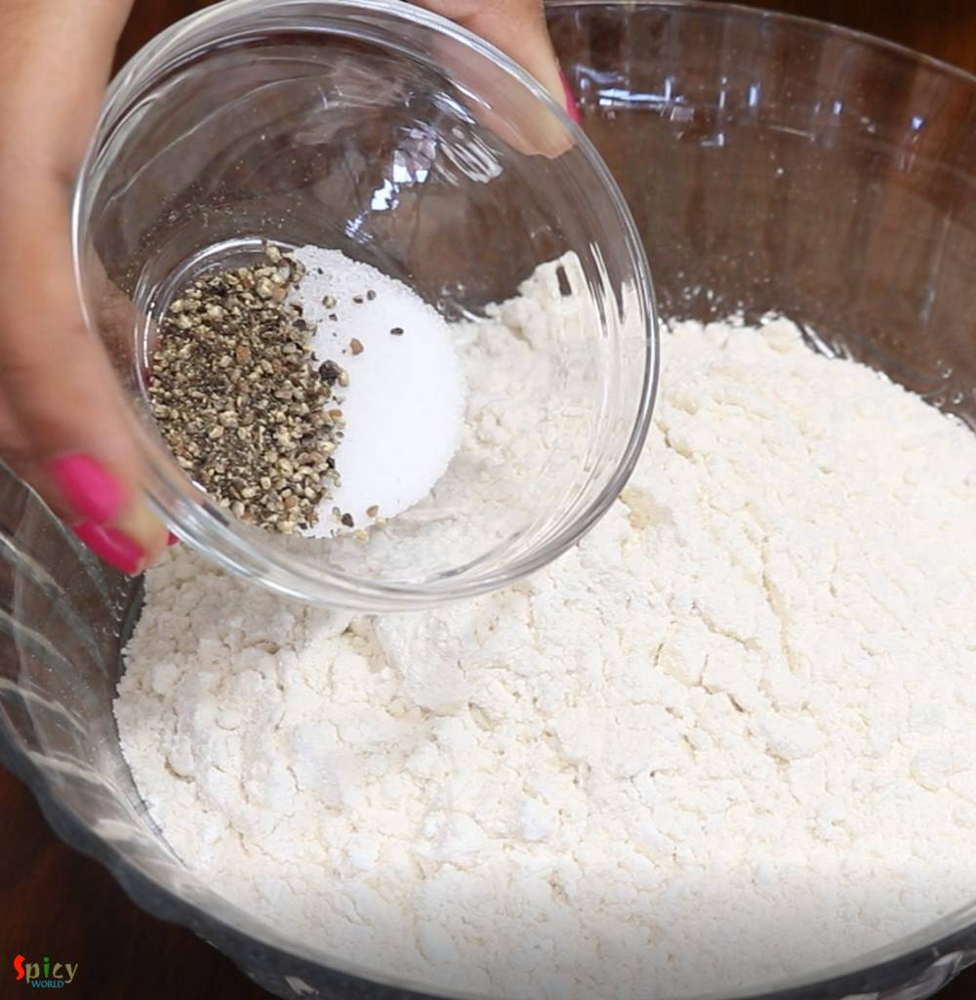

Simple and Easy Recipes
Indian Savory Pancake
© 2016 Spicy World, Published on: Jan 21, 2019
Kids are always excited about their lunchbox. My mom used to make this savory pancake in my lunchbox and I loved them. You can also stuff the savory pancakes with any type of dry curry. Yesterday I made them in breakfast and they came out delicious. I mentioned 'savory' because usually we eat 'pancake' with sweet maple syrup but these can be serve with ketchup or chili sauce. Try this at your home and share your experience with me.

Ingredients
- 1 cup of maida or all purpose flour.
- 2 cups of full fat milk.
- 2-3 eggs.
- Salt and Black pepper powder as per your taste.
- 1/4th part of an onion, finely chopped.
- Half cup of finely chopped carrots, green beans, capsicum, tomato, green chilies, coriander leaves.
- Cooking oil.
- Pinch of chili flakes.


Steps
Add some salt and pepper powder in all purpose flour. Mix well.
Then add eggs, mix well with the flour.
After that add milk, if you want more thin batter you may need more milk. Whisk very well and make a smooth batter.
Add finely chopped onion and all of the veggies, green chilies, coriander leaves. Mix well. I have also added some chili flakes.
Heat 1 Tablespoon of oil in a pan.
Then add a laddle full of batter, spread quickly. Keep the flame on medium.
After 2 minutes flip it to the other sides, spread another Tablespoon of oil from all the sides and cook for another 2-3 minutes.
Remove it from the pan. You will get 6-7 pancakes from this proportion.
Your indian savory pancake is ready to serve.
Serve this hot with salad and ketchup ...
")